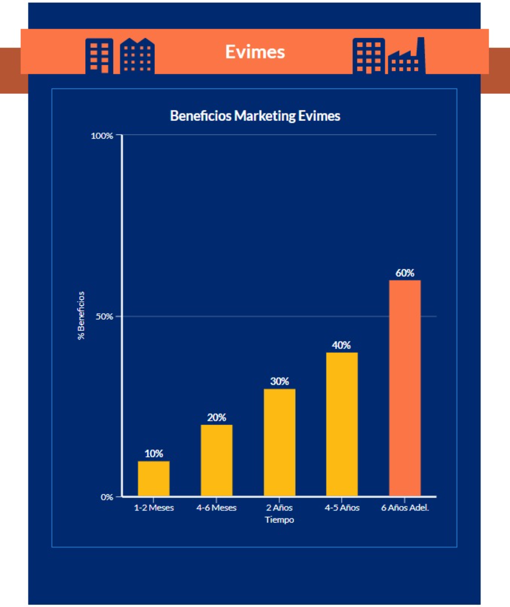

Analisis del mercado
Objetivos
Estrategias a seguir
Hacer uso de las redes sociales, abrir un perfil empresarial en cada una de ellas (las que se consideren oportunas).
Para este tipo de empresas se ha decidido hacer campaña de marketing en Twitter e Instagram.
Mejorar el posicionamiento en Google.
Asistir a ferias y eventos empresariales, cuyos asistentes sean de nuestro sector o de sectores afines como clientes potenciales.
Hacer uso de la publicidad en la web con herramientas como Google Ads.
Ponerse en contacto personalmente con los potenciales clientes.
Llevar a cabo las tareas propias de la actividad empresarial.
Usar herramientas de análisis web.
Dar visibilidad a las ofertas creadas dentro de la web de la empresa.
Campañas de mailing a la lista de clientes.
Campaña de llamadas a los clientes para mejorar el acompañamiento y la cercanía.
Mejorar el posicionamiento de la web en los diversos buscadores, atendiendo no sólo a Google.
Añadir la web en diferentes idiomas, facilitando el acceso a clientes de habla no hispana.
Mejorar las habilidades de comunicación en otros idiomas del equipo de trabajadores de la empresa, contratando si necesario una empresa externa que imparta cursos de idiomas intensivos a los trabajadores.
Revisión del trabajo

Esta gráfica muestra los beneficios esperados a lo largo del plan de marketing.
Durante todo el proceso de darnos a conocer de manera nacional, lo cual abarca
conseguir
nuevos
clientes y tener seguridad de permanencia por su parte, lo ideal sería un
crecimiento
regular y estable.
A partir de los 4 años que el nombre de nuestra empresa y nuestros magníficos
servicios empiecen a
sonar en países con una situación parecida al nuestro. A estas alturas ya deber
íamos de ser una opción
importante a nivel nacional.
Al final con el tiempo (6 años o así) deberíamos de ser una empresa a tener en
cuenta en la mayor
parte de Europa con una crecida en los beneficios importante, y tras la subida una
estabilidad sin
mucho incremento, pero tampoco bajada.